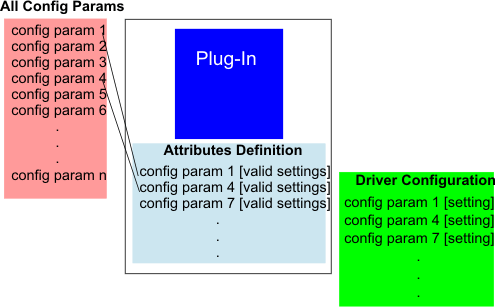

Driver Configuration
Driver configuration sets the behavior of the driver for a specific application.This is achieved by setting various configuration parameters. For example, there are parameters which define bin maps, message log files, and how the driver reacts in the case of a malfunction of the equipment.
The driver knows a large number of configuration parameters, but usually only a subset applies to the specific equipment in use. Therefore, each equipment specific plug-in is provided with a so-called attributes definition. The attributes definition defines which of the configuration parameters are applicable for that plug-in, and what the possible valid settings for each of these configuration parameters are.
This is illustrated by the following figure.

Normally, the default attributes definition provided with a plug-in does not need to be changed by the user.
However, if, for example, the specifications of equipment change, the attributes definition may need to be changed correspondingly (see Handling an Attributes Definition File for details).
You can store multiple driver configurations, which, for example, define different driver behavior for different applications, and then pick the configuration to be used at driver start-up.
Selection of the driver configuration and the plug-in to be used is done in the global configuration, as shown in Basic Driver Usage. For details about the global configuration, see Setting Up the Global Configuration.